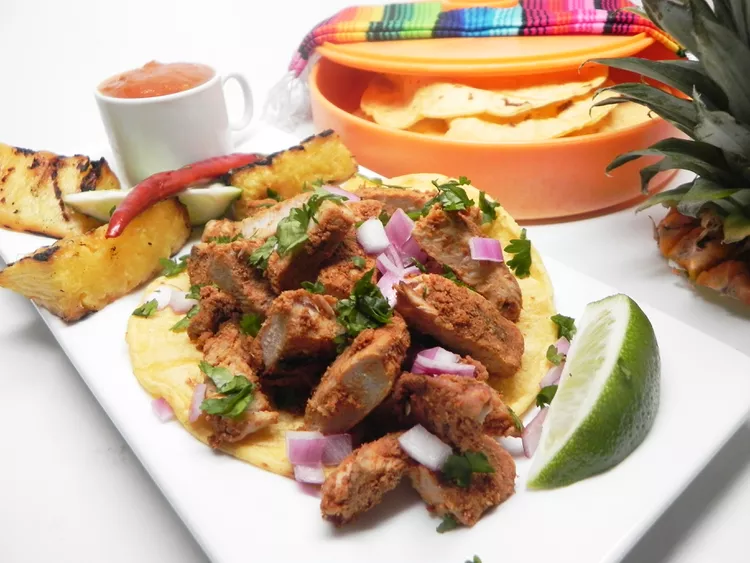

Al Pastor Taco

This is a recipe for anyone who wants to drink a corona with some savory tastes to follow (please drink only were you are of age to).
Ingredients:
- 8 dried pasilla chiles, seeded and torn to pieces
- 8 dried guajillo chiles, seeded and torn to pieces
- 8 cloves garlic, chopped
- 1 teaspoon achiote powder
- 1/2 teaspoon ground cumin
- 5 whole cloves
- 1 cup white vinegar
- salt to taste
- 2 pounds pork tenderloin, thinly sliced
- 1/2 cup chopped pineapple
- 32 (5 inch) corn tortillas
- 1 small onion, chopped
- 1/2 cup chopped fresh cilantro
- 4 limes, cut in wedges
Steps to make:
- Soak pasilla chiles and guajillo chiles in a bowl with hot water until softened, about 10 minutes; drain. Mash chiles, garlic, achiote powder, cumin, and cloves in a saucepan with a fork.
- Add vinegar to saucepan and bring to a boil; cook and stir until mixture becomes a thick paste. Season with salt. Rub chile paste over sliced pork, stacking meat on a plate. Cover and marinate in the refrigerator for 8 hours to overnight.
- Heat a large skillet over medium-high heat. Add marinated pork and pineapple; cook and stir until pork is browned, 7 to 10 minutes. Divide pork mixture over stacks of two corn tortillas; serve with onion, cilantro, and lime wedges.
...and voila! A great method for eating food in proportions that will fill you faster than you realize.
Home